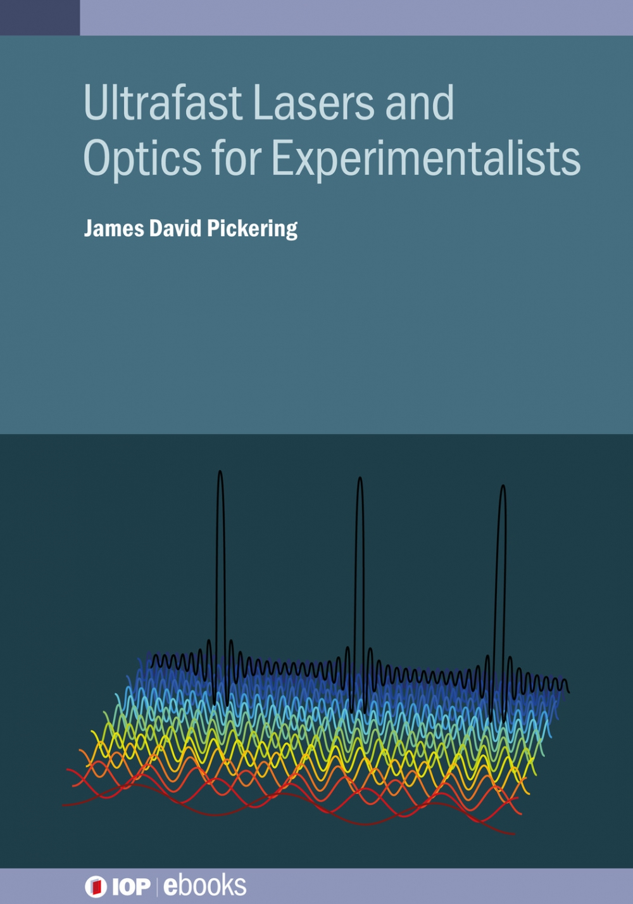

Hello
My name is James and I'm a physical chemist. This site mostly exists as a repository for things I have made, for both teaching and research, over the last few years. Hopefully they are more useful for people here than they are just sitting in my Dropbox.
Recently I wrote a short book about ultrafast lasers published through IOP ebooks. Most textbooks on laser physics are (understandly) written for physicists, but there is a rapidly growing group of laser users that don't come from this background (especially within the life sciences). The existing textbooks are largely inaccessible for this group, so this book aims to provide some intuitive explanations of relevant phenomena (hopefully rendering many of the excellent existing laser textbooks more accessible), and describes good laboratory practice. Errata that have been found are linked here
